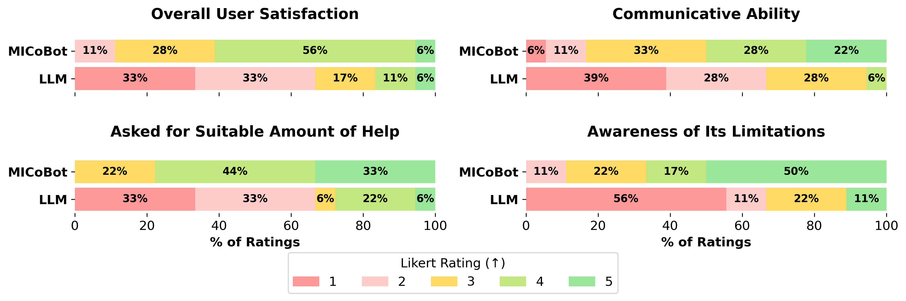

Humans collaborate best through effective communication, during which negotiation, proposals, and suggestions can be conveyed about who is best suited to perform each part of a complex task.
By extension, seamless human-robot collaboration on long-horizon tasks also requires effective communication. For instance, the robot may need to ask the human for help on steps it cannot perform, and the human may prefer to do the sensitive but not the tedious steps.
This demands a communication paradigm that is not one-way, where the human does all the talking by commanding the robot, but bidirectional, where both the human and robot can initiate dialog and proposals to best divide up steps of a complex task.
To improve human-robot collaboration, we introduce this mixed-initiative dialog paradigm to a real-world scenario of long-horizon collaborative mobile manipulation. We demonstrate through user studies with 18 unique participants that our system, MICoBot, can collaborate with humans exhibiting a wide spectrum of behaviors and engage in long, 20+ turn dialog exchanges to complete long-horizon tasks as an effective robotic collaborator.
Mixed-initiative dialog is a communication paradigm where both agents (human and robot) are able to ask each other questions, propose ideas, offer suggestions, in addition to responding and negotiating with the other agent.
MICoBot (Mixed-Initiative Collaborative Robot) is the first work to our knowledge to connect mixed-initiative dialog to real-world human-robot interaction.
Meta Planner | p_help estimator | Verbal Action Executor
The state description and dialog history change during the course of a task, and the plan tree depends on the task, but these are some samples of the actual prompts fed to GPT-powered modules of our method on Task 1 (open and pour package into bowl).
We show recordings of our system running in-the-wild with real human collaborators during our user studies.
This was our shortest task and required the least human effort. This user study reenactment (using the exact same dialog as what occurred in our actual user study) demonstrates an initially reluctant human that gets convinced by the robot to help on the step the robot is incapable of.
This task required the most human effort, and this user study is an example of a mostly compliant human that occassionally rejects the robot's help requests.
This user study exhibits a better balance between human and robot-initiated dialog exchanges compared to the previous two user study videos.
Performance Average over Real (left) and Sim (right).
In our real-world user study, MICoBot achieves a 61% task success rate, compared to 0% for the LLM baseline, by leveraging human assistance on 38% of the steps. (Figure on left.)
In an A/B blind preference test, 83% of the 18 users preferred our method MICoBot over the LLM baseline, and rated MICoBot considerably higher on four Likert-score metrics.
The ablations in simulation demonstrate our full method outperforms both ablated variants that restrict dialog to single-initiative modes: robot-only initiation (R-init) and human-only initiation (H-init). (Figure on right.) These results underscore the importance of mixed-initiative dialog in enabling flexible, robust human-robot collaboration.